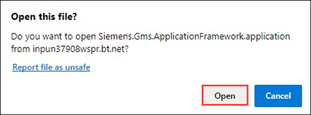
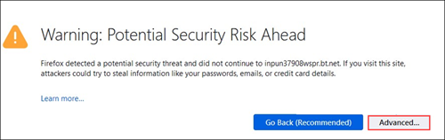
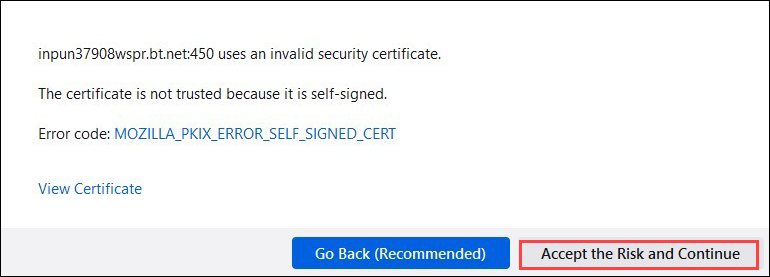
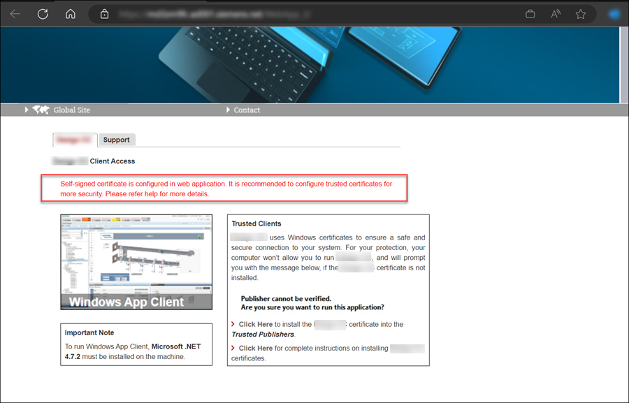
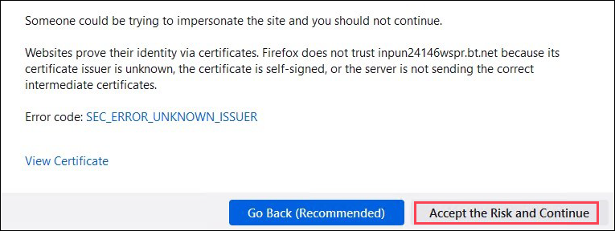
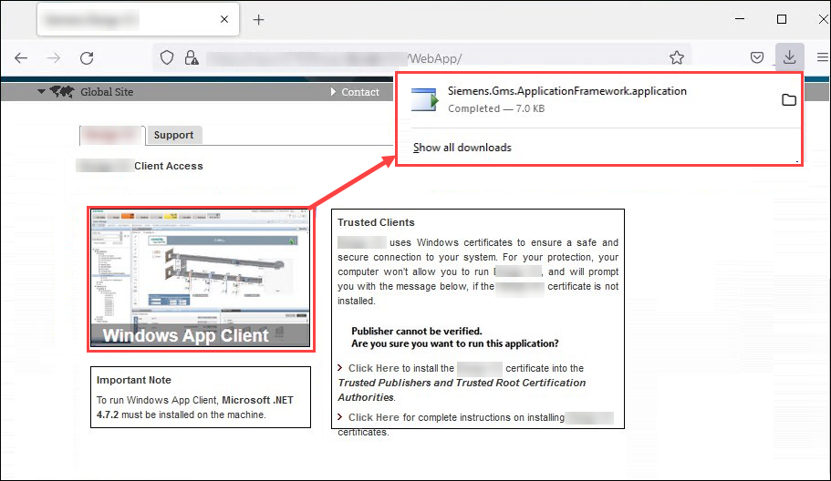
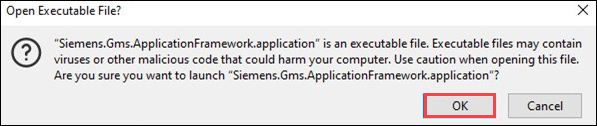
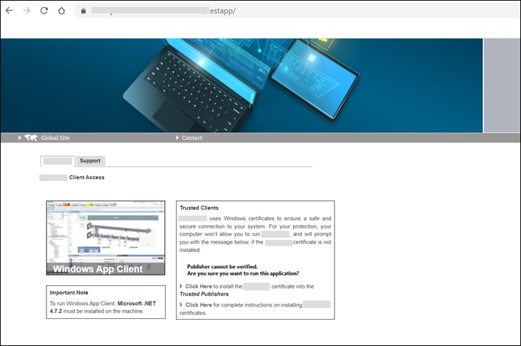

Launch a Windows App Client
Do this procedure to start Desigo CC as a Windows app client (the client software which is downloaded and installed on demand from a browser).
- You have installed the security certificate on the computer where you are working with Windows App Client.
- Launch the Windows browser.
- In the address bar of the browser, paste the web application URL.
- The Desigo CC page opens in the browser, and the Desigo CC tab contents display.
- In the Desigo CC tab, click the Windows App Client thumbnail for launching the Windows App Client.
- For browsers IE 11 onwards and Chrome the installation of Desigo CC starts. When completed, the logon dialog box displays.
- For Edge browser, in the Open this file dialog box that displays, click Open.

- For Firefox browser, a warning message displays. Click Advanced.

a. If you have used self-signed certificate while creating a web application, a dialog box displays asking you to Accept risk and Continue.
b. If self-signed is configured in web application, then it is recommended to configure trusted certificates for more security.
c. If you have used host certificate while creating a web application, in addition to dialog box Accept risk and Continue.
- You need to download the application from downloads.

- Click OK to open the executable file.

- For browsers Firefox and Edge the installation of Desigo CC starts. When completed, the logon dialog box displays.
- Enter your username and password.
- Select the domain.
- Click Logon.

NOTE:
Each time you launch Desigo CC as a Windows App Client, a search for system updates is performed. If a new version of the software is available on the web server (IIS), you can choose to update it or continue using the previous version.
